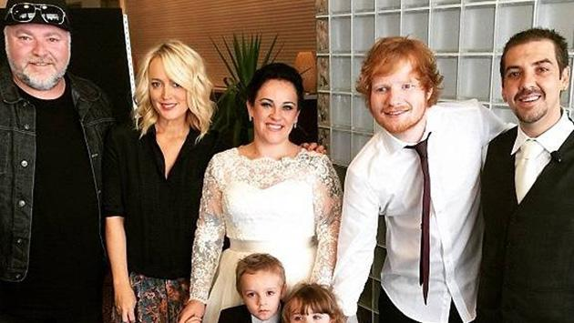

Biografia

Familia
Edward Christopher Sheeran, mejor conocido como Ed Sheeran, es un músico y compositor, nació el 17
de
febrero de 1991 en Hebden Bridge, Reino Unido. Ed Sheeran es conocido en el mundo por sus grandes
composiciones que realiza para sí mismo y varios artistas.
Ed Sheeran es el segundo hijo de la unión del profesor de artes, John Sheeran e Imogen, diseñadora
de
joyas
y publicista. Su hermano mayor se llama Matthew y es compositor de música clásica.Ed Sheeran vivió
la
mayoría de su vida en Framlingham. Por cuestiones de trabajo sus padres mantenían viajando por
Inglaterra,
entonces en el transcurso de sus viajes iban tocando música.
Ed Sheeran viene de una familia católica.
Inicios en la musica
A sus cuatro años empezó a cantar en el coro de la iglesia, y a sus once años
empezó a
toca
la
guitarra. A
la edad de catorce años empezó a componer. En el 2005, aun estudiando, empezó a grabar su
música; en
ese
año
lanzó de forma independiente su EP debut, The Orange Room. En Cambridge hizo varios conciertos
junto
a
Passenger cuando tenía quince años.
En 2006-2007 lazó dos álbumes de estudio. A sus dieciséis años dejó la escuela y se fue para
Londres
para
continuar con su carrera musical. Por ahí en el 2008 Ed Sheeran quería ser actor y audicionó,
pero
fue
rechazado entonces decidió enfocarse en la música. En el 2009 sacó su EP titulado You Need Me.
En
marzo
del
2010 sacó su EP Loose Change que incluye su sencillo debut The A Team.
En el 2010 viajó a Los Ángeles por un mes para realizar varias actividades artísticas en dicha
ciudad.
Sheeran realizó un concierto Inglewood, en ese lugar se encontró a la encargada de la noche de
micrófono
abierto de Jamie Foxx, ella lo invitó a que se presentara en un local que ellos tenían, al final
de
su
presentación se le acercó el manager de Jamie y lo invitó para que asistiera al programa de
radio de
Jamie,
The Foxxhole. El actor quedó fascinado por las destrezas artísticas de Ed Sheeran, entonces lo
invitó a
quedarse en su casa mientras estaba en L.A y lo dejó usar su estudio de grabación. En enero del
2011
Ed
Sheeran, aún sin haber firmado algún contrato discográfico, lanzó otro EP llamado No. 5
Collaborations
Project que viene con la colaboración de varios artistas. Ese EP fue un completo éxito,
encabezando
varias
listas británicas, entre esas iTunes. De acuerdo a todo lo que sucedió con el EP, Sheeran se
hizo
más
conocido, y llegó a oídos de Elton John, Elton se puso en contacto con Ed Sheeran y llamó a su
disquera,
Atlantic Records, tiempo después Sheeran firmó contrato de grabación con ellos. Ed Sheeran a
principio
del
2011 también firmó contrato con Asylum Records. En junio del 2011 publicó su sencillo debut, The
A
Team.
The
A Team estuvo en varios listados de varios países.
El 12 de septiembre del 2011 lanzó su álbum debut +, que se posicionó como número uno en listas
británicas
por ventas mayores a 100.000 copias. En el 2012 en los premios Brit Awards, Ed Sheeran fue
nominado
a
artista revelación británico y solista británico masculino, las cuales ganó. En agosto del 2012
Ed
Sheeran
se presentó en los Juegos Olímpicos de Londres 2012. Ese mismo año, Sheeran muestra interés de
querer
trabajar con Taylor Swift, Taylor escuchó la música de Sheeran mientras ella estaba de gira en
Autralia,
entonces uno de sus manager fe a ver a Ed Sheeran, fue así como empezaron a trabajar juntos y
escribieron un
dueto, Everything Has Changed. Ese año también trabajó en dos canciones para el segundo álbum
Take
Me
Home
de One Direction, una de esas canciones es Little Things.
Despegue
En el 2013 The A Team fue nominada como canción del año en la 55a ceremonia de los premios
Grammy.
Elton
John propuso a los organizadores de la ceremonia que incluyeran la actuación de Ed Sheeran, pero
como no
era
muy reconocido entonces se negaron, pero Elton John propuso un dueto con Sheeran en la
ceremonia,
fue
así
como estos dos artistas cantaron juntos The A Team el 10 de febrero en la ceremonia de los
Grammy.
En
noviembre de 2013 Ed Sheeran dio a conocer el sencillo I See Fire, que hace parte de banda
sonora de
la
película El hobbit: la desolación de Smaug. Esa canción se posicionó en el primer puesto de las
listas
de
sencillos de varios países. Sheeran fue nominado como mejor artista nuevo en la edición número
56 de
los
premios Grammy.
El primero de junio del 2014 Ed Sheeran lanzó el sencillo titulado Sing, que fue coescrito y
producido
por
el cantante, Pharrell Williams. El 23 de junio del mismo año se lanzó al público su álbum .
Luego
de su
publicación, se posicionó como número uno en varios países. apareció como el álbum más vendido
en
Reino
Unido en el año 2014 por 1 689 000 copias. En el 2015 también obtuvo un gran éxito comercial al
finalizar el
año como el segundo álbum más vendido, con 971 000 unidades, sólo detrás de 25 de Adele. vendió
más de
dos
millones de copias en Reino Unido, por lo tanto se consideró el quinto álbum más vendido de la
década de
2010, y en el siglo XXI es el número treinta y nueve, de los álbumes más vendidos en Reino
Unido.
Por
todas
las ventas, British Phonographic Industry certificó a Ed Sheeran ocho veces platino. Este es el
primer
álbum
de Ed Sheeran en situarse como número uno de Billboard 200 en Estados Unidos. La RIAA lo
certificó
dos
veces
platino. Para febrero del 2016 había vendido diez millones de copias en el mundo.
VIDEO